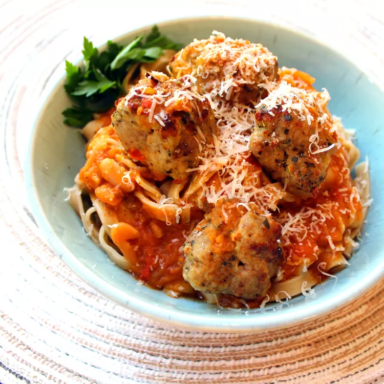

Easy Meatballs

Description
My husband makes these easy meatballs with simple ingredients like eggs, panko bread crumbs, garlic powder, and fresh basil, and they come out flavorful and delicious every time! Kids love them too! If desired, add the cooked meatballs to your favorite sauce until submerged (this brings out the moistness).
Ingredients
- 2 eggs
- 2 tablespoons Italian seasoning
- 2 teaspoons chopped fresh basil
- 1 teaspoon salt
- 1 teaspoon ground black pepper
- 1 teaspoon garlic powder
- 2 pounds ground beef
- ½ cup panko bread crumbs
Instructions
- Preheat the oven to 375 degrees F (190 degrees C).
- Mix eggs, Italian seasoning, basil, salt, pepper, andlirge bowl. Add beef and panko bread crumbs and mix thoroughly.
- Shape mixture into about forty 1 1/2-inch balls, a little smaller than golf balls, using a teaspoon. Place on ungreased, rimmed baking sheets
- Shape mixture into about forty 1 1/2-inch balls, a little smaller than golf balls, using a teaspoon. Place on ungreased, rimmed baking sheets.